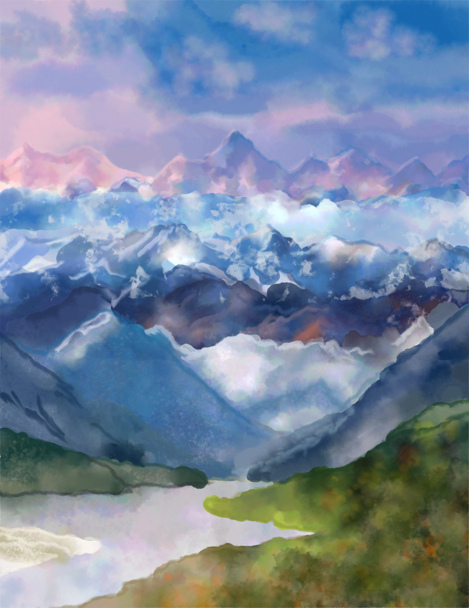

Cover art
The illustration references multiple mountain regions and a lake in Kazakhstan, combined into one abstract landscape so diverse geographic features are represented in a single image.
The stylized approach lets the cover feel cohesive rather than region-specific, while still evoking a strong sense of place. The goal was a striking, inviting cover that captures attention and encourages readers to pick up the book and begin studying the language.